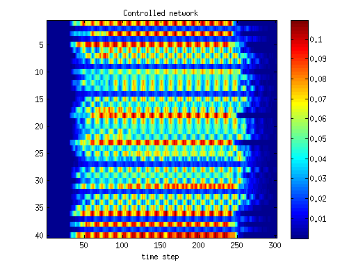
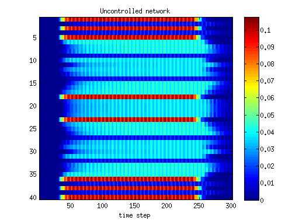

ITS Session 2: Control of large scale Traffic Networks
The course is oriented to introduce the models presented in the first session.
Contents
Previous information
This session is based on contents on Control of large scale urban traffic networks. Check slides at:
Session content
The session is divided in multiple areas. Click on each link to get deeper information on each one of the subjects:
1. Setup: Initial steps before starting.
2. Modeling S-CTM: Signalized cell transmission model (with manual set lights)
3. Modeling Avg-CTM: Averaged cell transmission model (with manual set lights)
3. Control Centralized Algorithm: Quadratic programming one step ahead controller
About this tool
By P. Grandinetti
This is a MatLab package that can be used to create and simulate road networks objects described by a macroscopic dynamics. The code comes entirely from the legacy code developed during the Ph.D. of the author; all technical details can be checked in the Ph.D. Thesis available.
Reproducibility is an important feature, sadly often neglected in published works. When using this repository, other than checking the above mentioned thesis for a deeper insight, we provide two fully reproducibile examples (with images generation), to ease the understanding of the code. Thus, in the folder `reproducible example` you will find
- A runnable script to simulate one road network and instructions about how to set up your experiments,
- A runnable script to simulate two different networks, one with optimized traffic lights and one without; the script produces several figures in order to compare the systems' performance.
The above mentioned Ph.D. work was about Control of large scale traffic networks. Differently said, our objective was not just to simulate dynamic networks, but also to design algorithms to improve the behavior, for instance by reducing the congestions; the developed controllers are stored in the subfolder controllers.
Requirements
- Any recent version of MatLab should work
- YALMIP & Some good numerical solvers: most of the algorithms are based on convex optimization, for which you can use built-in solvers, or external solvers like cvx, mosek, etc. Other controllers are instead based on integer optimization, therefore an appropriate solver is needed (here again, mosek will work).
Examples
When running the networkComparisons script, you will see the following two figures (among others)


The figures show how the density of vehicles in every road (with roads indexes from 1 to 40 in the y-axis) evolves along the entire simulation time (x-axis). By comparing the two, it is possible to see the the controller spreads out the severe congestions (that appear in the uncontrolled case) by creating a more homogeneous distribution of vehicles all over the network.
Contributors
The code has been entirely written by Pietro Grandinetti. Adaptation of this tool for the ITS Session has been done by Andres Ladino.